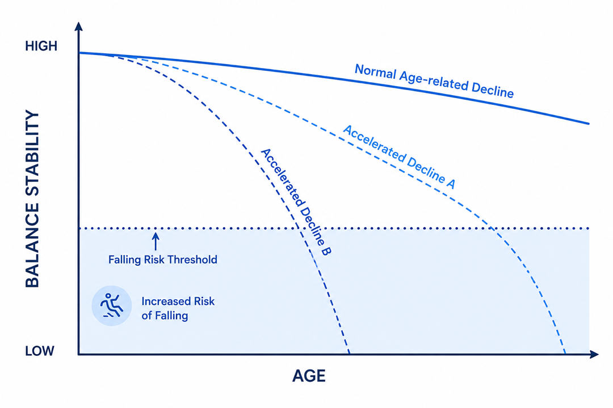
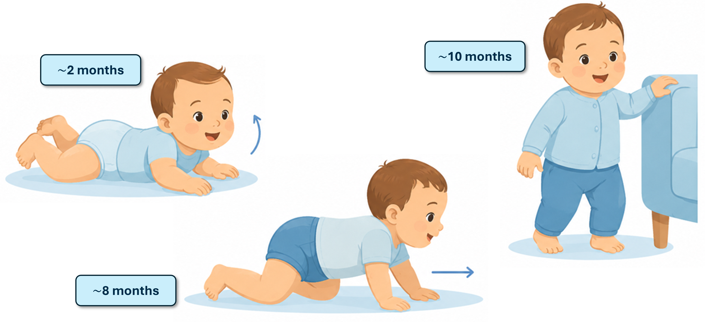
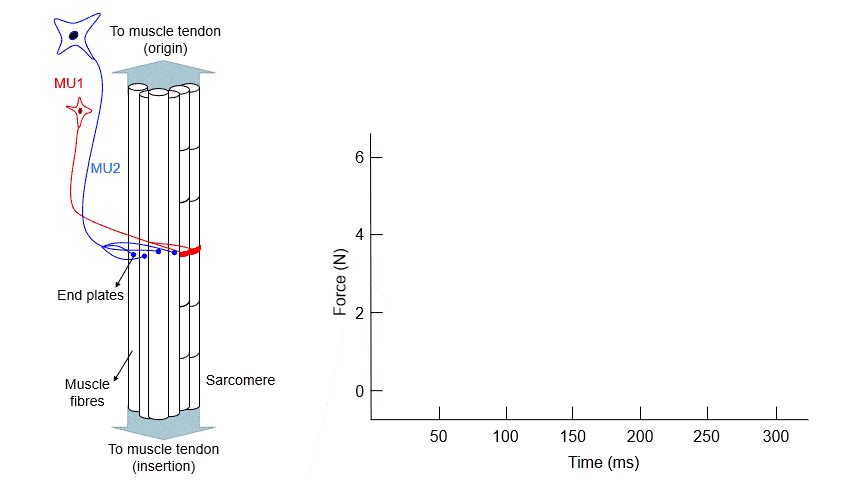
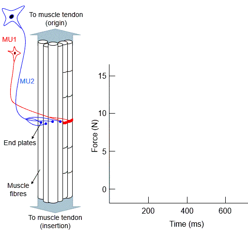
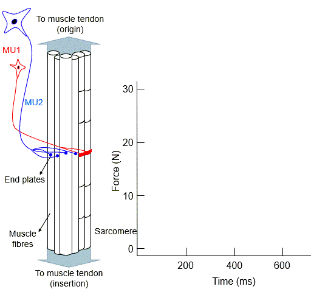
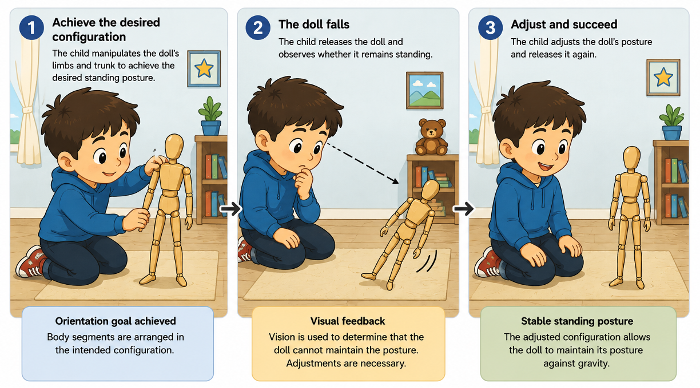
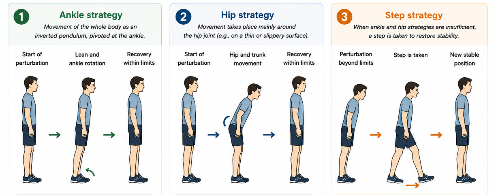

1 The Physiology of Human Standing Posture
There are two main reasons for selecting human posture control as the experimental paradigm used throughout this course.
- Studying the control of bipedal standing posture is of major social and clinical relevance.
- Posture-related data can be collected relatively easily, providing an ideal framework for applying the statistical methods presented in this course.
…provides the physiological basis for understanding the sensory-motor components involved in the control of human standing posture.
1.1 Why Study Posture Control?
Although some individuals exhibit exceptional balance abilities, others struggle to stand upright without external support. A limited ability to control standing posture compromises the performance of everyday activities and increases the risk of unintentionally coming to rest on the ground—that is, of falling.
Not surprisingly, the World Health Organization identifies falls as the second leading cause of unintentional injury deaths worldwide.
Falls occur more frequently in older adults. Even when not severe enough to require medical attention, falls may have important psychological consequences. For example, Vellas and colleagues [1] reported that approximately one-third of older adults develop a fear of falling after experiencing a fall.
While falls may result from environmental factors, there also appears to be a substantial intrinsic component associated with postural control. Robinovitch and coworkers [2] conducted a large observational study in Canadian long-term care facilities and reported that a considerable proportion of falls were attributable to internal causes rather than external hazards.
Importantly, this evidence does not imply a direct causal effect of age. Aging alone does not appear to reduce postural stability below the threshold associated with falling (Figure 1.1). Shupert and Horak [3] proposed that aging accounts for only a modest decline in postural stability. However, pathological conditions affecting the sensory-motor system1 may accelerate this decline and substantially increase fall risk.

Understanding the mechanisms underlying falls is not the only reason for studying posture control. Postural control is a ubiquitous requirement of daily life. Without it, we would be unable to perform actions as simple as sitting, standing, walking, catching a ball, swimming, or reading a book. Unlike voluntary movements of the upper limbs, however, postural control operates largely outside conscious awareness. We rarely think about the postural requirements imposed by a task, yet these requirements must constantly be met.
1.2 Meeting Postural Demands Provides Evidence of Postural Control
Consider holding a large box while standing. Upper-limb muscles must generate sufficient force to support the box, with the finger flexors and elbow flexors playing a primary role. At the same time, the box imposes substantial postural demands. Its weight generates forward-rotating moments about the ankle, hip, and trunk joints. If these moments were not compensated for, the body would be pushed forward by gravity and a fall could occur.
Our sensory-motor system continuously meets these demands. Consequently, muscles that are not directly involved in holding the box are activated to preserve stability, often without entering conscious awareness.
The need for postural control lies at the foundation of motor development. Following Figure 1.2, inspired by the work of Shumway-Cook and Wollacott [4], control of head posture in space, typically achieved around two months of age, develops before effective trunk control emerges. As coordinated control of the head and trunk matures, new functional skills such as sitting and crawling become possible. Independent standing represents a later developmental milestone, requiring coordinated activation of numerous muscles across multiple body segments.
Thus, the development of posture can be viewed as a progressive maturation of both segmental control and inter-segmental coordination.

1.3 The Definition of Postural Control
Posture refers to the configuration of body segments in space. Postural control can therefore be defined as the maintenance of the position and orientation of body segments relative to one another and to the environment.
It is useful to distinguish posture from balance. Posture describes body configuration, whereas balance (or postural stability) refers to the ability to maintain the body’s center of mass within the limits imposed by the base of support. Postural control encompasses the processes through which both posture and balance are achieved.
Postural control is highly dynamic and depends on task demands, environmental conditions, and individual characteristics.
Consider the task of reading a book while standing. Upper-limb muscles are required to hold the book in a comfortable reading position, whereas lower-limb and trunk muscles are required to maintain the upright stance. The postural demands associated with this task change according to:
- Task: reading while seated imposes different requirements on the lower limbs and trunk.
- Environment: reading while standing on a moving bus increases stability demands because external perturbations must be compensated for.
- Individual: individuals with impaired postural control may not be able to read comfortably while standing.
While the first two aspects are associated with external factors, the latter is intrinsic to the individual and reflects that person’s ability to control posture.
There Is No Single System for Postural Control
Postural control does not rely on a single physiological system. Rather, it emerges from the coordinated interaction of multiple sensory and motor systems.
Physiological receptors provide information about body position, movement, and orientation. Muscles act as mechanical actuators, generating forces and moments that stabilize the body. Neural structures integrate sensory information and coordinate the activation of appropriate muscles in response to changing demands.
Several theories have been proposed to explain how these processes are organized. A detailed discussion of such theories is beyond the scope of this course. Instead, our goal is to provide the physiological background necessary for understanding how orientation-related signals can be measured and analyzed experimentally.
The following sections provide a brief overview of the motor and sensory components involved in postural control.
Regulation of Muscle Force
Active muscle force production is essential for maintaining upright posture. Force generation results from a cascade of electrochemical events occurring within the neuromuscular system.
At the cellular level, force is generated through interactions between the protein filaments actin and myosin within muscle fibers. These interactions are triggered by action potentials. When action potentials generated in and propagated along a motoneuron reach the neuromuscular junction, action potentials are subsequently generated within the muscle fibers it innervates.
These muscle-fiber action potentials propagate along the membrane and trigger contraction of individual sarcomeres, the fundamental contractile units of skeletal muscle. Tension rises rapidly following excitation and gradually declines as the membrane returns to its resting state.
The force response elicited by a single action potential is known as a twitch. A twitch is characterized by a relatively rapid contraction phase followed by a slower relaxation phase (Figure 1.3). Depending on the muscle considered, the complete twitch response may last several hundred milliseconds.

By itself, the functional utility of a single twitch is limited. To meet the force requirements associated with posture and movement, the nervous system regulates force through two primary mechanisms.
Temporal Summation (Rate Coding). Force can be increased by reducing the interval between successive action potentials. As the discharge rate of a motoneuron increases, individual twitches overlap and sum, producing progressively larger forces (cf. Figure 1.4).


Spatial Summation (Recruitment). Force can also be increased by recruiting additional motoneurons. Because each motoneuron activates a set of muscle fibers, with motoneuron and the served muscle fibers being collectively known as a single motor unit, recruitment increases the number of fibers contributing to force production (cf. Figure 1.5).
Together, rate coding and recruitment provide the nervous system with powerful mechanisms for regulating muscle force over a wide range of functional demands.
Sensing Posture
Generating force is not sufficient for controlling posture. The nervous system must also determine when, where, and how much force should be applied. This requires continuous information about body position and orientation.
Before discussing the sensory systems involved in postural control, it is useful to consider the simple analogy shown in Figure 1.6. Imagine a child playing with an articulated doll and attempting to place it in a standing position. The child first manipulates the doll’s limbs and trunk until the desired posture is achieved. At this stage, the orientation goal has been met: the body segments have been arranged in the intended configuration.
The child then releases the doll and observes whether it remains standing. If the doll falls, the posture must be adjusted and the process repeated. In this way, achieving a stable standing posture becomes a trial-and-error process. Visual information allows the child to determine whether the desired posture has been maintained, while the hands provide the forces required to modify the orientation of the doll’s segments.

Although human postural control is vastly more sophisticated, the same fundamental principles apply. The nervous system must
- continuously estimate the orientation of body segments in space through sensory signals that provide information about body orientation and movement.
- coordinate the contraction of synergistic muscles to preserve stability.
The main difference is that, rather than relying solely on vision and conscious trial-and-error, the body integrates information from multiple sensory systems and automatically adjusts muscle activity to meet postural demands.
Three major sensory systems contribute to postural control:
- Proprioceptive system, which provides information about joint position, muscle length, muscle force, and segment orientation. Based on the proprioceptive feedback, the nervous system is informed about the relative position and orientation of segments.
- Vestibular system, which provides information about head motion and orientation relative to gravity.
- Visual system, which provides information about the position and movement of the body relative to the surrounding environment.
Postural control depends on the integration of these sensory signals. The relative contribution of each source varies according to task demands and environmental conditions. For example, visual information becomes particularly important when navigating complex environments, whereas proprioceptive information is critical when standing on stable ground. The importance of each of these sensory channels, as well as to evaluate them, will be covered in the following chapter.
Like the child in Figure 1.6, the nervous system must: 1) achieve a desired orientation of body segments and; 2) maintain that orientation against gravity.
Sensory information (vision, proprioception, vestibular) provides feedback, and motor actions generate the forces needed to preserve stability.
1.4 Evidence of Posture Control
Even though there is no specific physiological system dedicated to the control of posture, the existence of distinct postural strategies is well established. These strategies, defined as coordinated patterns of activation across groups of synergistic muscles, support the notion that postural control is an intrinsic component of the sensory-motor system. Evidence for postural strategies stems primarily from perturbation studies, in which systematic or random external disturbances are applied to the standing body.
Postural Strategies
The classic experiments conducted by Lewis Nashner provided pivotal contributions to our understanding of postural control. Nashner [5] observed that specific and reproducible sequences of muscle activation emerged in response to perturbations applied to the support surface. For example, forward translation of the support surface resulted in a disto-proximal sequence of muscle activation, beginning with the tibialis anterior and followed by the quadriceps muscles. Perturbations in the opposite direction elicited a temporally similar sequence of responses in the posterior muscles.
A legitimate question arises: was this coordinated muscle activity simply the result of stretch reflexes triggered sequentially as muscles were progressively stretched by the perturbation, starting from the most distal muscles? Or did it reflect an internally organized postural strategy, generated in response to a predictable perturbation?
In his study, Nashner [5] addressed this question by applying both translational and rotational perturbations of the support surface. Because rotational perturbations primarily stretched the ankle dorsiflexor muscles, only these muscles would be expected to respond if stretch reflexes alone accounted for the postural corrections observed during surface translation. Instead, Nashner observed that the sequential disto-proximal response was largely invariant to the type of perturbation, suggesting that such inter-segmental coordination of muscle activity is a hallmark of postural control.
The postural strategy reported by Nashner has proven to be clinically relevant. For example, it has successfully distinguished healthy individuals from patients with neurological disorders. As reported by Horak and colleagues [6], neurological patients respond to translational surface perturbations by stiffening the ankle and hip joints through muscle co-contraction2.
Ankle, Hip, and Step Strategies
Depending on the characteristics of the perturbation and the support surface, different postural strategies may be employed (cf. Figure 1.7).
When perturbations are small and the support surface is stable, muscles are activated in a disto-proximal sequence. Ankle muscles are activated first, followed by hip and trunk muscles. As a consequence, the body moves as a relatively rigid segment, resembling an inverted pendulum pivoted around the ankle joints. The direction of motion, forward or backward, depends on the direction and nature of the perturbation. This pendular movement of the body around the ankle characterizes the ankle strategy (panel 1 in Figure 1.7).
When standing on a narrow or compliant support surface, fast responses are required to preserve stability. Ankle-generated corrections are intrinsically slow and may become ineffective. In these circumstances, the coordinated pattern of muscle activation reverses direction, proceeding from proximal to distal muscles. As a result, movement occurs predominantly around the hip joint. The forward and backward motion of the trunk about the hip joint, achieved through a proximo-distal pattern of muscle activation, defines the hip strategy (panel 2 in Figure 1.7).
Finally, perturbations may exceed the corrective capabilities of both the ankle and hip strategies. In such cases, stability is restored by changing the base of support through a step. The step strategy is characterized by a movement of one or both legs in the direction of the perturbation, to avoid falling (panel 3 in Figure 1.7).

1.5 Assessing Posture Control
While perturbation-based experiments have greatly contributed to our understanding of postural stabilization mechanisms, postural control is most commonly assessed during quiet standing.
Because postural control relies on continuously estimating body orientation in space, many experimental studies focus on measuring variables related to body sway and segment orientation. These measurements provide indirect information about the sensory-motor processes underlying posture control and will form the basis of the experimental analyses developed in the following chapters.